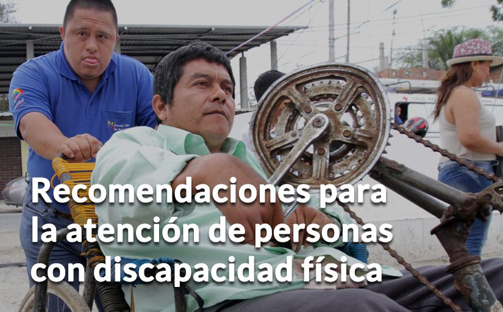

Infórmate permanentemente y conversa con tu familia sobre el plan familiar.
Infórmate permanentemente y conversa con tu familia sobre el plan familiar.|  |
MEDIDAS DE AUTOPROTECCIÓN
Infórmate permanentemente y conversa con tu familia sobre el plan familiar.
Ten siempre a la mano los teléfonos de familiares que vivan y que no vivan contigo.
Elabora un plan de comunicación sencillo y básico con tus familiares y vecinos más cercanos para casos de emergencia.
Infórmate oportunamente o pide ayuda, de necesitarla, a tu familia, amigos o vecinos para que estés al tanto de cuándo y cómo deberás evacuar si estás en zona de riesgo.
ACCIONES PARA EL FAMILIAR, CUIDADOR O PERSONA QUE PRESTA AYUDA
Asegúrate de confirmar si tu familiar con discapacidad está o no en zona de riesgo. Si lo está, infórmate de los pasos a dar en caso de evacuación.
Transmíteles calma: coméntale cuándo deberá evacuar, cómo y dónde permanecerá, en caso de que las autoridades así lo dispongan.
Comparte e incluye a tu familiar con discapacidad en la elaboración del plan familiar, toma de decisiones y aportes para la seguridad de todos.
Procura estar en permanente contacto con las autoridades responsables de su evacuación e infórmate en canales oficiales.
No lo dejes solo sin una advertencia previa.
NECESIDADES DE PERSONAS CON DISCAPACIDAD
Artículos importantes:
Recuerda que la persona con discapacidad siempre debe llevar consigo su ayuda técnica (silla de ruedas, bastón, muletas, otros).
Mochila de emergencia con agua, abrigo y alimentos para al menos 3 días.
Maleta o canguro con: documentos personales, teléfonos importantes, medicinas y manera de administrarlos.
Artículos de su uso frecuente que puedan aliviar la permanencia temporal fuera de casa.